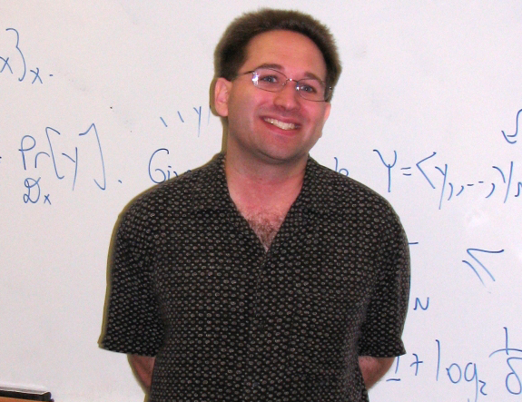

“More often than not, the only reason we need experiments is that we're not smart enough.- Scott Aaronson”
Scott Aaronson
Profile
Scott Joel Aaronson (born May 21, 1981)is an American theoretical computer scientist and David J. Bruton Jr. Centennial Professor of Computer Science at the University of Texas at Austin. His primary areas of research are quantum computing and computational complexity theory.
Growing up
Aaronson spent a year in Asia, yet he was born and raised in the United States. When he returned to the US, he found his schooling to be constrictive, receiving poor grades, and getting into arguments with teachers. He had enrolled in a school there that allowed him to skip forward many years in math. Aaronson was only in his first year of high school when he joined in The Clarkson School, a talented education programme administered by Clarkson University. As a result, he was allowed to apply to colleges. He was accepted to Cornell University, where he lived in the Telluride House and earned his BSc in computer science in 2000. He later enrolled at the University of California, Berkeley, where he received his PhD in 2004 while being supervised by Umesh Vazirani.
Career
.png)
He developed a passion for computational complexity and quantum computing while studying at Cornell. In 2007, he accepted a professor position at MIT after completing postdoctoral fellowships at the Center for Advanced Study and the University of Waterloo. Quantum computing and more broadly computational complexity theory are his main areas of study. As the David J. Bruton Jr. Centennial Professor of Computer Science and the founding director of UT Austin's new Quantum Information Center, he relocated from MIT to UT Austin in the summer of 2016. He revealed in the summer of 2022 that he will be spending a year at OpenAI researching the theoretical underpinnings of AI safety.
Popular Work
He is one of the creators of the wiki, Complexity Zoo, which lists all categories of computational complexity. He is the writer of "Shtetl-Optimized," a popular blog. Who Can Identify The Larger Number? was another article he authored. The later work, which is extensively used in academic computer science, leverages Tibor Radó's Busy Beaver Numbers notion to show the computability boundaries in a teaching context. Quantum Computing Since Democritus is a survey course he has also taught at the graduate level. Aaronson was a guest speaker at the 2007 Foundational Issues in Science Institute conference and had a piece titled "The Limitations of Quantum Computers" published in Scientific American.